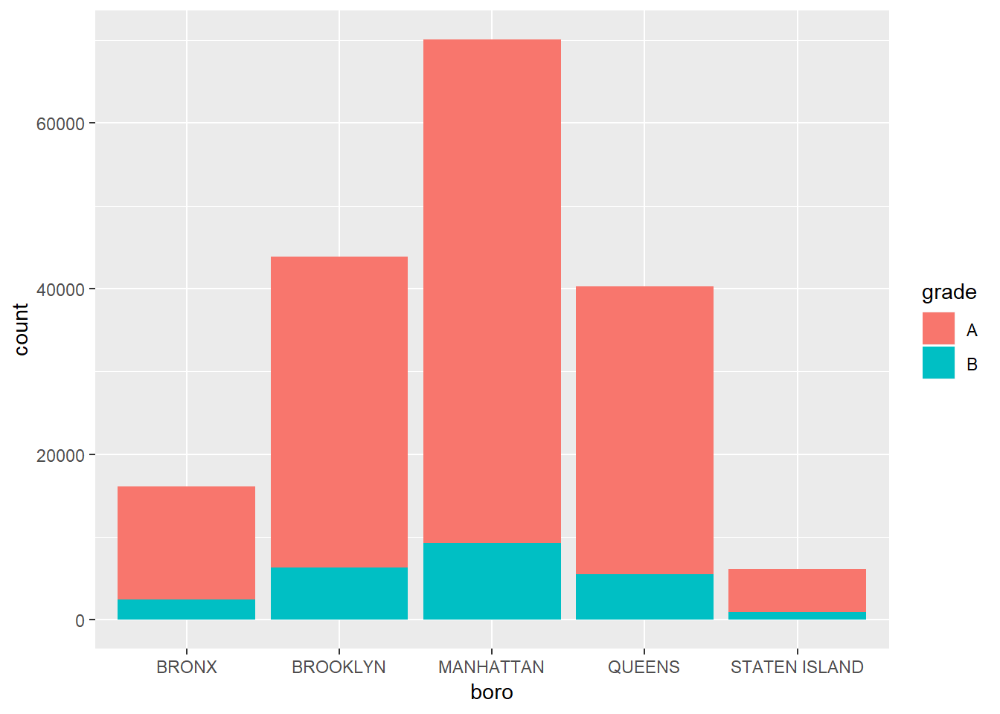

library(tidyverse)## -- Attaching packages --------------------------------------------------------------------------- tidyverse 1.2.1 --## v ggplot2 3.0.0 v purrr 0.2.5
## v tibble 1.4.2 v dplyr 0.7.6
## v tidyr 0.8.1 v stringr 1.3.1
## v readr 1.1.1 v forcats 0.3.0## -- Conflicts ------------------------------------------------------------------------------ tidyverse_conflicts() --
## x dplyr::filter() masks stats::filter()
## x dplyr::lag() masks stats::lag()library(httr)
library(jsonlite)##
## Attaching package: 'jsonlite'## The following object is masked from 'package:purrr':
##
## flattenget_all_inspections = function(url) {
all_inspections = vector("list", length = 0)
loop_index = 1
chunk_size = 50000
DO_NEXT = TRUE
while (DO_NEXT) {
message("Getting data, page ", loop_index)
all_inspections[[loop_index]] =
GET(url,
query = list(`$order` = "zipcode",
`$limit` = chunk_size,
`$offset` = as.integer((loop_index - 1) * chunk_size)
)
) %>%
content("text") %>%
fromJSON() %>%
as_tibble()
DO_NEXT = dim(all_inspections[[loop_index]])[1] == chunk_size
loop_index = loop_index + 1
}
all_inspections
}
url = "https://data.cityofnewyork.us/resource/9w7m-hzhe.json"
nyc_inspections = get_all_inspections(url) %>%
bind_rows() ## Getting data, page 1## Getting data, page 2## Getting data, page 3## Getting data, page 4## Getting data, page 5## Getting data, page 6## Getting data, page 7## Getting data, page 8nyc_restaurants = nyc_inspections %>%
janitor::clean_names() %>%
select(boro, cuisine_description, grade, street, score) %>%
filter(boro != "Missing")nyc_grades = nyc_restaurants %>%
select(boro, grade) %>%
filter(grade %in% c("A", "B"), boro != "Missing")
nyc_grades %>%
ggplot(aes(x = boro, fill = grade)) +
geom_bar()
nyc_scores = nyc_restaurants %>%
select(score, grade, boro) %>%
filter(grade %in% c("A", "B", "C")) %>%
group_by(boro) %>%
summarize(n = n())common_neighborhoods = nyc_airbnb %>% count(neighbourhood, sort = TRUE) %>% top_n(2000) %>% select(neighbourhood)
nyc_scores %>% ggplot(aes(x = boro, y = score, fill = grade)) + geom_boxplot() + theme_classic() + theme(axis.text.x = element_text(angle = 90, hjust = 1))
ggplot(nyc_scores, aes(x = boro, y = n)) + geom_violin(aes(fill = boro), color = “blue”, alpha = .5) + stat_summary(fun.y = median, geom = “point”, color = “blue”, size = 4)
ggplot(nyc_scores, aes(x = score)) + geom_histogram()